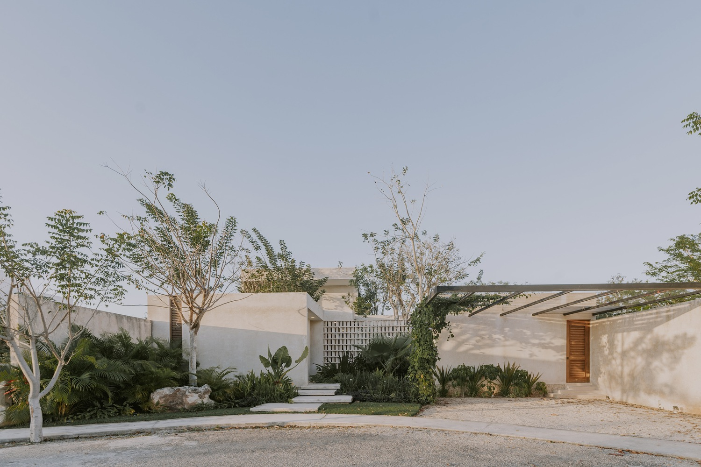
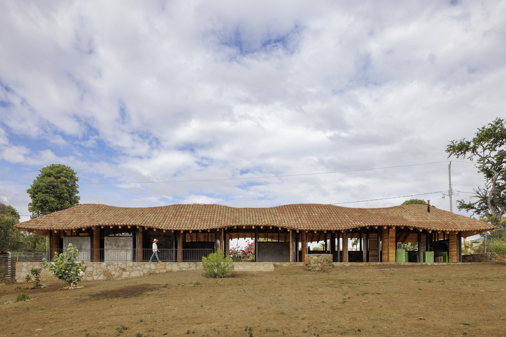
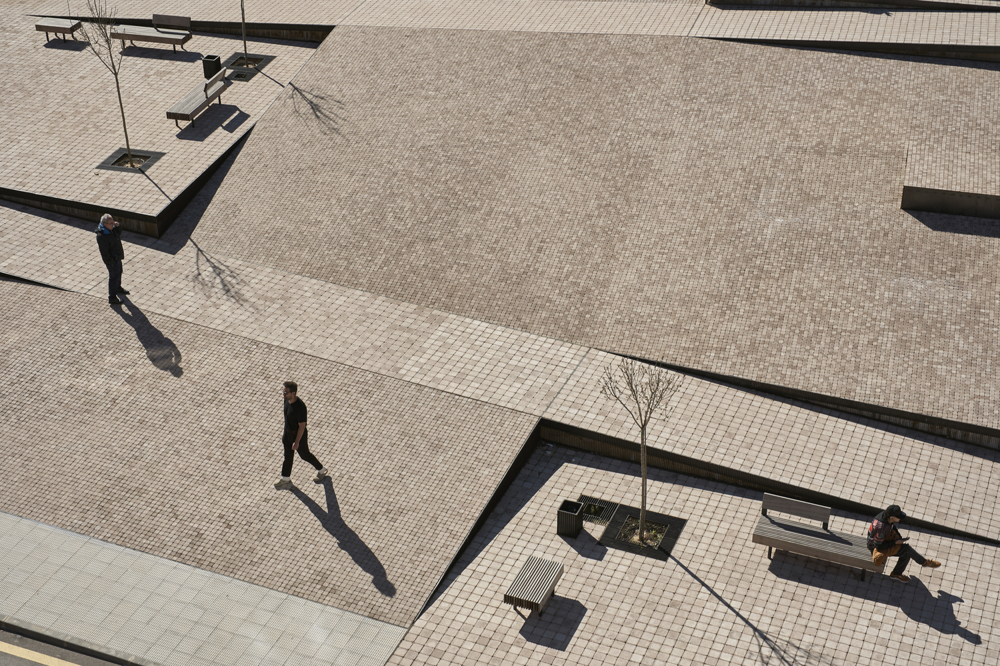
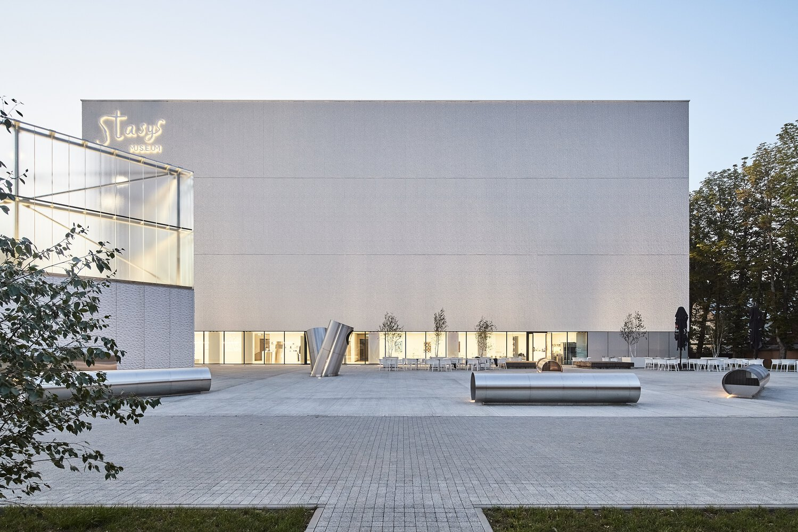

Colegio de Cuorcon
Diseño arquitectónico por MABIRE REICH Arquitectos, tiene 3755 metros cuadrados el proyecto que está diseñado para albergar a 750 estudiantes y una Unité Localisée pour l'Insertion Scolaire (ULIS).
En esta ocasión, el Consejo Departamental decidió encargar la realización de todas las obras complementarias (remodelación de los espacios exteriores, renovación térmica, reorganización de los locales de la escuela de día existentes) que permitan reconfigurar el colegio de forma duradera.
La fachada, que se prolonga hacia el sur, está marcada por un pórtico que refuerza la presencia de la escuela. Entre el cuerpo principal de la ampliación y la sala de bicicletas se dibuja un vacío, conectado por una amplia marquesina. Esta forma define la entrada al edificio.
Emma House / HW Studio
Diseño arquitectónico por HW Studio, tiene 40 metros cuadrados el proyecto inspirados por el Museo Paula Rego diseñado por Eduardo Souto de Moura, tuvimos una experiencia transformadora que influyó profundamente en nuestra visión de Casa Emma. Al entrar al museo, sentimos una serenidad inmediata e indescriptible bajo una de sus pirámides, donde la luz se filtraba suavemente a través de un tragaluz alto. Los rayos dorados bañaban suavemente cada superficie, proyectando sombras y reflejos que le daban al espacio una calidez única. Era como si la luz misma nos abrazara y protegiera, creando una profunda sensación de paz.
En arquitectura, la luz y el espacio son fuerzas poderosas que evocan emociones y experiencias transformadoras. Con Casa Emma, aspiramos a recrear esta misma sensación de calma mediante una cuidadosa manipulación de la luz. Aquí, la luz entra de una manera que resuena profundamente, con el objetivo de evocar la experiencia serena que tuvimos en Cascais.
En un lote compacto de 4x10 metros, Casa Emma requería un enfoque inteligente en la eficiencia espacial, la iluminación y la ventilación. Un pasillo de entrada lleva a los visitantes al interior, donde el diseño se despliega para revelar un espacio central abierto que combina la sala, el comedor y la cocina sin divisiones. Este diseño optimiza el flujo espacial, con un área de servicio oculta y un refrigerador oculto hacia la parte posterior, lo que maximiza la funcionalidad.
Otros Diseños
Casa “Eya” / TARA Arquitectura
La casa “Eya” se ubica en la ciudad de Mérida, Yucatán, y es el resultado de un profundo análisis e interpretación de las necesidades de los clientes y su forma de ver y apreciar la vida. El objetivo principal de la casa “Eya” surge de conceptualizar el proyecto como un ente que preexiste en el sitio, por lo que la intervención arquitectónica se adaptaría y honraría el contexto.
Escuela Rural en Oaxaca / Territorio Estudio
El proyecto parte de una reflexión sobre cómo deben ser los espacios educativos en la actualidad. A partir de este punto de partida, se comienza creando una sombra, una cubierta sostenida por una estructura flexible, ligera y abierta que permite el diálogo entre las personas, la naturaleza y la arquitectura. El edificio se adapta a las condiciones preexistentes del lugar y vincula los espacios exteriores e interiores disolviendo sus límites.
Plaza Zarrón / BOV ESTUDIO
La Plaza del Zarrón se plantea como un espacio para todos, que atienda el flujo natural y las necesidades de todos los ciudadanos de Almazán. Centrándonos en la muralla y el casco antiguo y observando el movimiento de sus habitantes, nos propusimos crear un vínculo fluido e inclusivo entre el casco antiguo y las zonas más nuevas, salvando la diferencia de elevación de cinco metros que antes actuaba como barrera. Este proyecto prioriza la accesibilidad y la conexión, permitiendo que todos se muevan libremente entre partes de la ciudad que antes estaban separadas.
Museo Stasys / IMPLMNT arquitectos
El Museo Stasys está ubicado en Panevėžys , Lituania, en la parte norte del centro de la ciudad. El objetivo principal del proyecto era mejorar el desarrollo de la ciudad mediante la creación de un entorno público de alta calidad que enriqueciera el centro de la ciudad. Se centra en servir al interés público mejorando la calidad de vida y promoviendo la conciencia cultural y la expresión artística dentro de un espacio comunitario democrático.
